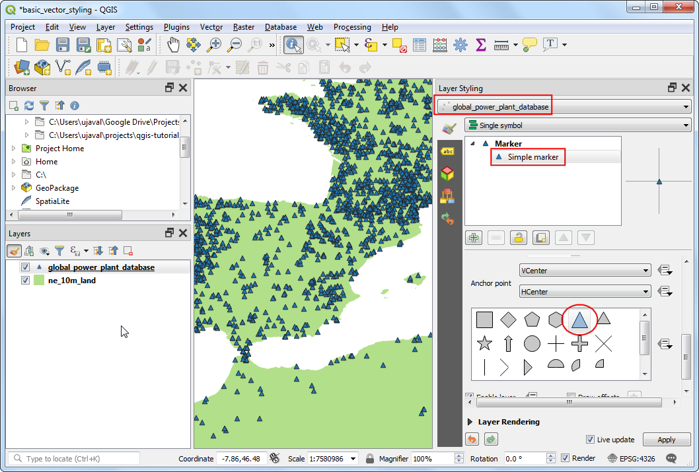
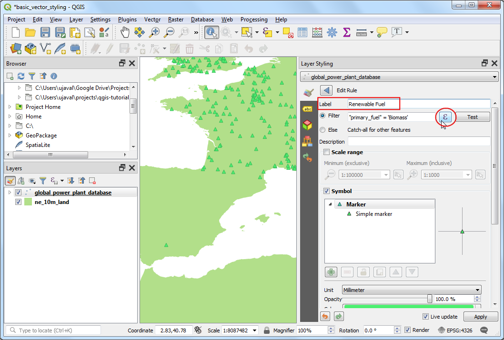
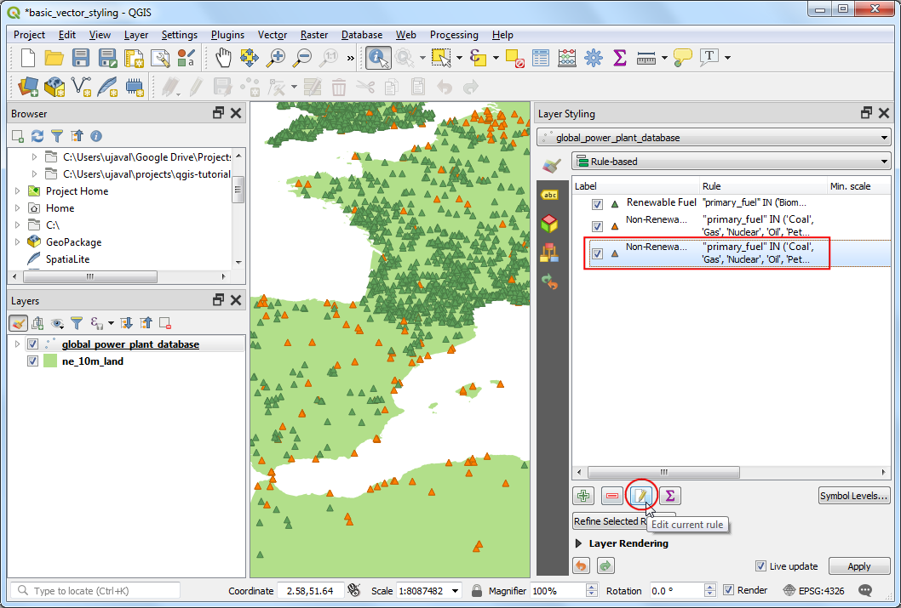
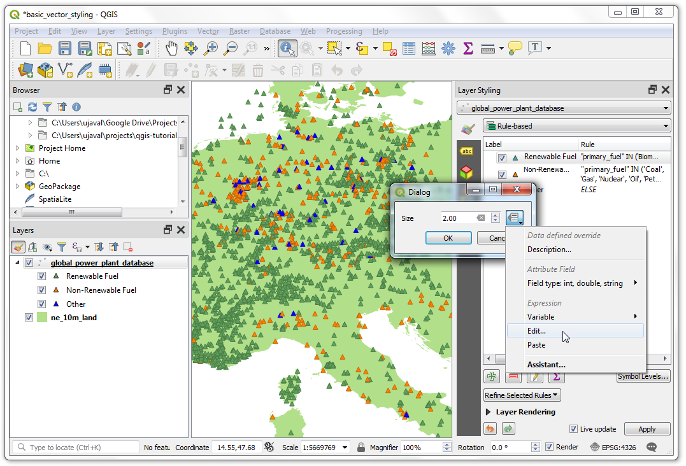

기본 벡터 스타일링 (QGIS3)¶
지도를 만들기 위해서는 GIS 데이터에 대해 형식을 갖추고 시각적 정보의 형태로 보여주어야 합니다. QGIS에는 원 데이터를 다양한 형태의 기호로 바꿀 수 있는 많은 옵션이 포함되어 있습니다. 여기서는 기초적인 스타일링에 대해 알아볼 것입니다.
작업 개요¶
We will take a CSV file containing the location of all power plants in the World and create a visualization showing distribution of renewable and non-renewable fuels used in these power plants.
기타 스킬¶
식을 사용하여 여러 속성 값을 단일 범주로 그룹화하세요.
데이터 획득¶
World Resources Institute has compiled a comprehensive, open source database of power plants around the World covering over 30000 plants. Download the The Global Power Plant Database from the WRI Open Data Portal.
‘Natural Earth<http://naturalearthdata.com>` 에는 몇개의 글로벌 벡터레이어를 가지고 있다. Land polygon이 포함된 10m Physical Vectors를 다운받으세요. <https://www.naturalearthdata.com/http//www.naturalearthdata.com/download/10m/physical/ne_10m_land.zip>`
편의성을 위해 아래에서 레이어를 바로 다운받으실 수 있다.
globalpowerplantdatabasev120.zip
출처 : [WRI] [NATURALEARTH]
과정¶
두 데이터 세트를 모두 컴퓨터의 폴더에 압축 해제하십시오. QGIS 브라우저 패널에서 데이터를 추출한 디렉터리를 찾으십시오. ``ne_10m_land” 폴더를 확장하고 ``ne_10m_land”를 선택하십시오.”shp” 층 레이어를 캔버스로 끌어다 놓으십시오.

You will get a new layer
ne_10m_landadded to the Layers panel. The global power plant database comes as a CSV file, so we will need to import it. Click the Open Data Source Manager button on the Data Source Toolbar. You can also use Ctrl + L keyboard shortcut.

데이터 원본 관리자 창에서 구분된 텍스트 탭으로 전환하십시오. 파일 이름 옆의’ …’ 버튼을 누르고 globalpowerplantdatabasev120.zip 파일을 추출한 디렉터리를 찾아보십시오. global_power_plant_database.csv를 선택하십시오. QGIS는 구분자와 지오메트리 필드를 자동으로 탐지한다. Geometry CRS를 EPSG:4326 - WGS84의 기본값으로 유지하십시오. 추가를 누른 후 닫기를 누르십시오.

새 레이어 global_power_plant_database가 레이어 패널에 추가되고, 당신은 캔버스에서 발전소를 나타내는 점을 보게 될 것이다. 이제 우리는 이 두 층을 모두 스타일링할 준비가 되었다. 레이어 패널 상단에 있는 레이어 스타일링 패널 열기 버튼을 클릭하십시오.

오른쪽에서 레이어 스타일링 패널이 열릴 것이다. ne_10m_land 계층을 먼저 선택하십시오. 이는 기본 계층이 될 것이고 그래서 우리는 그것이 산만하지 않도록 최소한의 스타일링을 유지할 수 있을 것이다. 단순 채우기를 누르고 아래로 스크롤하십시오. 원하는 대로 채우기 색을 선택하십시오. 스트로크 색 옆의 드롭다운을 누르고 투명 스트로크를 선택하십시오. 이렇게 되면 육지 폴리곤의 윤곽이 투명해질 것이다. 선택 결과가 계층에 즉시 적용되는 것을 볼 수 있을 것이다.

그런 다음 global_power_plant_database 계층을 선택하십시오. 단순 마커를 클릭하고 아래로 스크롤하십시오. 삼각형 마커를 선택하십시오.

위로 스크롤하여 원하는 채우기 색상을 선택하십시오. 유용한 카트로그래픽 기법은 채우기 색상의 약간 어두운 버전을 스트로크 색상으로 선택하는 것이다. QGIS는 이를 수동으로 선택하기 보다는 이를 보다 정확하게 제어하기 위한 표현을 제공한다. Data defined override 버튼을 클릭하고 Edit(편집)을 선택하십시오.

다음 식을 입력하여 채우기 색보다 색이 30% 더 어두운 음영으로 설정하고 확인을 누르십시오.
darker(@symbol_color, 130)
참고
이 표현식은 선택한 채우기 색상과 무관하다는 점에 유의하십시오. 제공된 채우기 색상에 따라 테두리 색상을 자동으로 설정하는 다음 단계에서 매우 유용하다는 것을 알게 될 것이다.
스트로크 색 옆에 있는 데이터 정의 오버라이드 버튼이 노란색으로 바뀌었다는 것을 알 수 있을 것이다. 이 속성이 오버라이드에 의해 제어되는 것보다 표시된다. 발전소 층의 단일 기호 렌더링은 그다지 유용하지 않다. 발전소의 위치를 제외하고는 많은 정보를 전달하지 않는다. 다른 렌더러로 좀 더 유용하게 쓰자. 심볼로지 드롭다운을 누르고 범주화된 렌더러를 선택하십시오.

global_power_plant_database 레이어에는 각 발전소에서 사용되는 1차 연료를 나타내는 속성이 포함되어 있다. 우리는 각각의 독특한 연료 유형을 다른 색으로 보여주는 스타일을 만들 수 있다. Primary_Fuel을 Column으로 선택하십시오. 분류를 누르십시오. 여러 범주가 나타나고 그에 따라 지도 렌더링이 변경될 것입니다.

While a Categorized view is useful, this layer contains too-many categories for one to meaningfully interpret the map. A better approach would be to group certain type of fuel categories and reduce the number of classes. Let’s try to create 3 categories - Renewable fuel, Non-renewable fuel and Other. Select
Rule-basedrenderer. We want to delete all the categories except the top one. Select the second category from the top, hold the Shift key and click the bottom category. This will select all the categories except the top one. Once selected, click the Remove selected rules button to delete them.

나머지 규칙을 선택하고 현재 규칙 편집을 누르십시오.

재생 가능한 연료를 라벨로 입력하십시오. 필터 옆에 있는 식 단추를 누르십시오.

표현식 문자열 작성기 대화 상자에서 다음 식을 입력하고 확인을 누르십시오. 여기서는 복수의 재생 에너지 범주를 단일 범주로 분류하고 있다.
"primary_fuel" IN ('Biomass', 'Geothermal', 'Hydro', 'Solar', 'Wind', 'Storage', 'Wave and Tidal')
참고
재생 가능 대 비갱신 범주를 위해 선택된 연료의 유형은 ‘위키피디아<https://en.wikipedia.org/wiki/Renewable_energy>’_. 에 기초한다. 여기서 선택한 것과 일치하지 않을 수 있는 대체 정의와 분류가 있다
아래로 스크롤하여 단순 마커를 누르십시오. 적절한 채우기 색상을 선택하십시오. 완료되면 뒤로 버튼을 클릭하십시오.

재생가능한 연료 범주에 대한 단일 규칙이 적용되는 것을 볼 수 있다. 행을 마우스 오른쪽 버튼으로 누르고 복사를 선택하십시오. 다시 마우스 오른쪽 버튼을 클릭하고 Paste(붙여넣기)를 선택하십시오.

기존 규칙의 사본이 추가될 것이다. 새로 추가된 행을 선택하고 현재 규칙 편집을 누르십시오.

재생 불가능한 연료를 라벨로 입력하십시오. 필터 옆에 있는 식 단추를 누르십시오.

표현식 문자열 작성기 대화 상자에서 다음 식을 입력하고 확인을 누르십시오.
"primary_fuel" IN ('Coal', 'Gas', 'Nuclear', 'Oil', 'Petcoke')
아래로 스크롤하여 단순 마커를 누르십시오. 적절한 채우기 색상을 선택하십시오. 완료되면 뒤로 버튼을 클릭하십시오.

복사/붙여넣기 프로세스를 반복하여 세 번째 규칙을 추가하십시오. 이 옵션을 선택하고 현재 규칙 편집을 누르십시오.

나머지들을 레이블로 입력하십시오. 필터 대신 다른 형상에 대해 모두 캡처 - 를 선택하십시오. 이는 이전 2개 규칙에서 누락된 범주가 이 규칙에 의해 스타일링됨을 보장한다. 아래로 스크롤하여 단순 마커를 누르십시오. 적절한 채우기 색상을 선택하십시오. 완료되면 뒤로 버튼을 클릭하십시오.

재분류는 완료되었다. 발전소에서 사용하는 재생 가능 대 비 재생 가능 연료 공급원의 분포와 그 공급원의 국가 간 분포를 보여주는 훨씬 더 깨끗한 광경을 보게 될 것이다. 그러나 이것은 완전한 그림을 보여주지 못한다. 스타일링에 다른 변수를 추가할 수 있다. 크기가 균일한 모든 마커를 표시하기보다는 각 발전소의 발전 용량에 비례하는 크기를 표시할 수 있다. 이 지도 제작 기법은 다변량 지도법이라고 불린다. 재생 가능한 연료 규칙을 마우스 오른쪽 버튼으로 누르고 크기 변경을 선택하십시오.

Size(크기) 옆에 있는 Data defined override(데이터 정의 재정의) 버튼을 클릭하십시오. 편집을 선택하십시오.

데이터셋마다 발전 용량이 많이 다르기 때문에 크기에 따라 작은 범위를 얻는 효과적인 방법은 log10 기능을 사용하는 것이다. 원하는 시각화에 가장 적합한 것을 얻기 위해 다양한 표현으로 실험할 수 있다. 다음 식을 입력하고 확인을 누르십시오.
log10("capacity_mw") + 1
다른 규칙에 대해 동일한 프로세스를 반복하십시오.

일단 만족하면, 레이어 스타일링 패널을 닫으셔도 됩니다.

최종 시각화를 보면 데이터 세트의 패턴을 즉시 볼 수 있다. 예를 들어, 유럽에는 재생 에너지원을 사용하는 발전소가 더 많지만, 비재생 에너지원을 사용하는 발전소에 비해 용량이 낮다.

If you want to give feedback or share your experience with this tutorial, please comment below. (requires GitHub account)